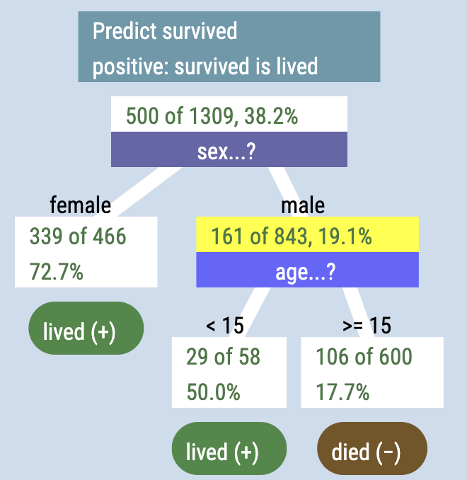
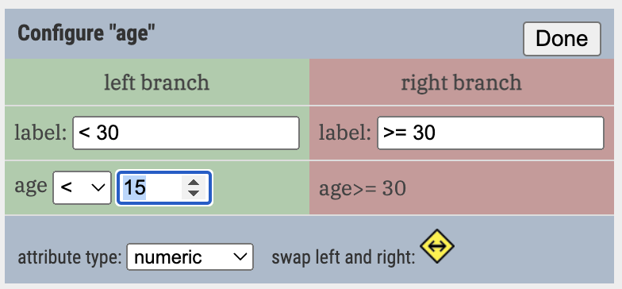
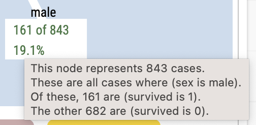

Your first tree

In this guide you will learn to make classification trees in CODAP using the Arbor plugin.
A tree diagram about passengers on the Titanic appears at right.
Begin a tree by dragging your target variable into the middle of a blank, gray tree panel. The target variable might also be called
- the dependent variable
- the outcome variable
- the effect
It’s the thing you are trying to predict. In the case of the Titanic data, it’s survived: we want to know what makes it more likely to have survived the disaster.
In the live example below, start your tree by dropping survived into the blank tree. You should see that 500 of the 1309 people survived, that is, survived = 1.
Next, drop sex onto the white box with “500 of 139” in it.
The tree will branch. You can see how the survival rate was different for males and females.
Notice that the tree is composed of boxes (called nodes) and lines (links).

age: setting the cutpoint to 15. It would be smart to change the labels as well!Next, drop age onto the “male” node. It will split, but probably using age 30 as a break point. Click the gear on the age stripe and change that 30 to 15.
Now your tree should look like the one up at the top of the page… except that you have to assign the terminal nodes — the leaves of the tree — to an outcome. Do that by clicking on the leaf nodes repeatedly until you see what you want. Remember: 1 means you’re predicting survival.
It’s easy to lose track of what’s going on in a node. When that happens, just point at the node. Don’t click, just hover for a moment, and text will pop up describing that node in more detail.
